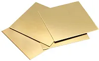

Л63М
Мягкая (отожженная) двухкомпонентная латунь. Буква «М» на конце указывает на состояние поставки металлопроката — мягкий. Применяется для глубокой вытяжки, сложной холодной штамповки, чеканки монет, изготовления криогенной техники, производства сильфонов, радиаторных трубок, а также сложных гнутых элементов интерьера и фурнитуры.